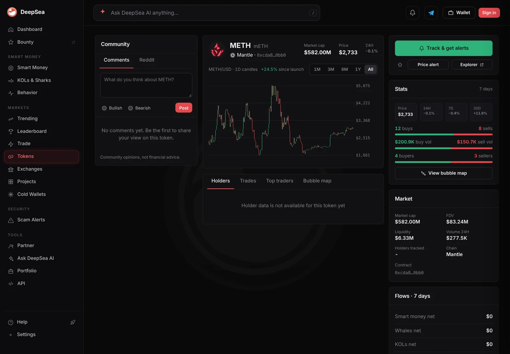
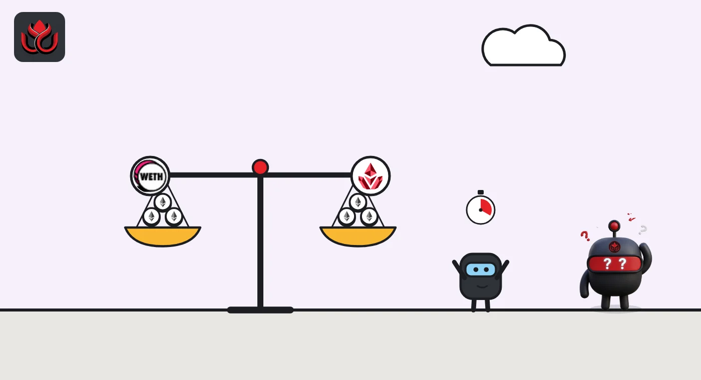

One Mantle shark swapped ether tokens 208 times in a day. Its 30-day result: minus $2,400
The wallet traded about $314,000 between WETH and Mantle's staked ether token in 24 hours. After 2,219 closed trades in 30 days, it is slightly in the red.
Key points
- In the same 24 hours one shark wallet on Mantle, ending in ca15, bought $157,241 and sold $157,225 in 208 trades, all in WETH and mETH, DeepSea shows. Its mETH trades alone came to $156,637.
- Over 30 days the wallet closed 2,219 trades, won 1,029 of them, and is down $2,400. Two days earlier its 30-day figure was up $5,518.
- CoinGecko priced mETH, Mantle's staked ether token, at $2,464.98 at 6:42 a.m. ET, about 1.099 ether. CoinGecko counted $1.32 million of 24-hour mETH trading, mostly on Bybit, and about $278,000 in Mantle pools.
 What DeepSea's data shows
What DeepSea's data shows
DeepSea's 24-hour shark table, made at 6:35 a.m. ET on November 7, lists two Mantle tokens traded by a single shark wallet each: WETH (wrapped ether), $83,508 bought and $74,322 sold in 105 trades, and mETH, $73,734 bought and $82,903 sold in 103 trades.
The wallet table matches one wallet, ending in ca15: $157,241 bought, $157,225 sold, 208 trades. 105 plus 103 is 208. DeepSea labels it only as a shark.
Its realized PnL (closed trades, first in, first out) at 6:34 a.m. ET: +$2,132 over 7 days on 883 trades (485 winners) and minus $2,400 over 30 days on 2,219 trades (1,029 winners). On November 5 at 6:33 a.m. ET the 30-day figure was +$5,518 on 1,886 trades.

Data: DeepSea (desea.io), checked November 7, 2026, 6:35 a.m. ET.
What mETH is
CoinGecko lists mETH as Mantle Staked Ether. Staking means locking ether to help run the Ethereum network for a reward. A liquid staking token like mETH stands for staked ether plus the rewards it has earned, which is why one mETH is worth more than one ETH: $2,464.98 against $2,243.77 at 6:42 a.m. ET, a ratio of about 1.099.
Because the two prices move almost together, swapping between them makes money only from small gaps. That fits a wallet making hundreds of small trades.
A big share of mETH's day
CoinGecko counted about $1.32 million of mETH trading worldwide in 24 hours, against a market value of $522.5 million. Most of it was on the Bybit exchange. Its Mantle pools (Merchant Moe, Agni and Oku) added up to about $278,000. DeepSea's own mETH page for Mantle showed $277,500 of 24-hour volume at 6:48 a.m. ET. This one wallet bought and sold $156,637 of mETH, more than half of the Mantle pool volume on both sites. So one active wallet makes up a large part of mETH's daily trading on Mantle, though only about 12% of its trading worldwide.

How thin the margin is
On average the wallet traded about $1,500 per trade and lost about $1 per closed trade over 30 days. Trading fees and price gaps can eat a strategy like this, and the data shows how thin the margin is. We do not know who runs the wallet or whether it is automated.
LC Insight analysis
This section is our reading of the facts above, not a statement of fact.
- We think this is a small, thin-margin trading operation, not a bet on ether's direction: it buys and sells almost the same amount every day.
- Its 30-day result swung by about $7,900 in two days, so a few bad swaps are enough to turn it negative.
- When one wallet makes up more than half of a token's counted volume on a chain, that volume says more about a few traders than about wide demand.
What's next
- Whether the wallet's 30-day result returns to profit
- The mETH to ETH price ratio, near 1.099
- mETH trading volume on CoinGecko
Disclaimer. This article is based on public information and the sources listed below as of the update time shown. It is for information only and is not investment, legal or tax advice. Figures may change as companies and authorities publish new data.
Sources
- CoinGecko, Mantle Staked Ether (mETH) price and volume (read November 7, 2026, 6:42 a.m. ET)
- CoinGecko, Ethereum (ETH) price (read November 7, 2026, 6:42 a.m. ET)
- DeepSea, live shark trade table, 24 hours (made November 7, 2026, 6:35 a.m. ET)
- DeepSea, live realized PnL table (made November 5, 2026, 6:33 a.m. ET, and November 7, 2026, 6:34 a.m. ET)